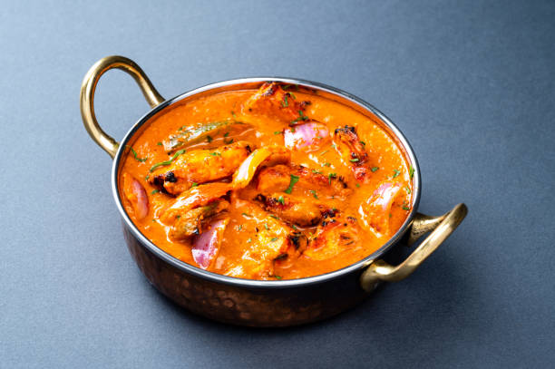

Paneer Tikka Masala Recipe

What is Paneer Tikka Masala?
Paneer tikka masala is usually made with cubes of paneer cheese in a spicy creamy curry sauce.
This vegetarian dish goes well with naan or basmati rice.
Now that we have learnt a little about this dish, let's get to cooking!
Ingredients
Let's dive into the list of ingredients needed for this tasty dish.
- Paneer
- Onions
- Bell Peppers
- Garlic and Ginger
- Pepper
- Garam Masala
- Tomato Sauce
Steps
Now that we have gathered our ingredients, let's start cooking.
- Cooking Paneer: Melt butter in a skillet over medium heat. Add paneer cubes; cook and stir until golden, about 5 minutes.
- Cooking Onions and Spices: Add onions, bell pepper, jalapeños, ground cashews, garlic paste, ginger paste, cayenne pepper, cumin, coriander, and garam masala; cook and stir until well combined and fragrant, about 1 minute.
- Mixing tomato sauce into the paneer mixture: Mix tomato sauce, half-and-half, and salt into paneer mixture; simmer until thickened, about 30 minutes.
To go back to the Home page, click here.